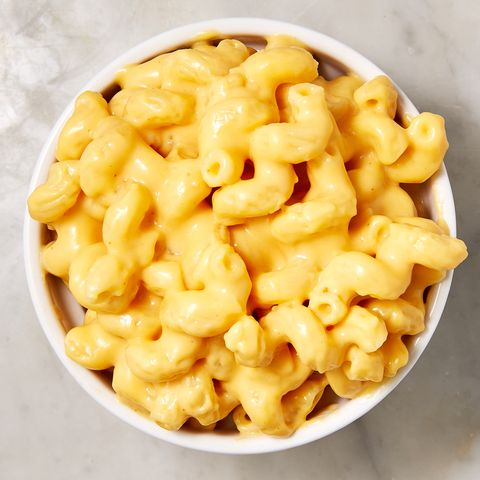

Macaroni and Cheese

Description
This is a mac and cheese recipe that is the best vegan one I've tasted, but if you want to use regular milk, cheese, and butter, it'll turn out tasty as well.
Ingredients
- 16 oz macaroni (or rotini or shells)
- 1 teaspoon salt
- 2 Tablespoons vegan butter
- 1/2 Cup cashew milk
- 2 Cups vegan cheese
- 1/8 teaspoon mustard powder
- 1/8 teaspoon paprika
- 1/2 teaspoon onion powder
- 1/2 teaspoon garlic powder
- 1 teaspoon vegetable bouillon (or 1 cube)
- 2 Tablespoons nutritional yeast
Steps
- In a pot, bring water and salt to a boil.
- Once boiling, add in pasta and cook until al dente.
- Drain the pasta then return to the pot with the rest of the ingredients.
- Stir on low-medium heat until melted and bubbly.
Back to recipes